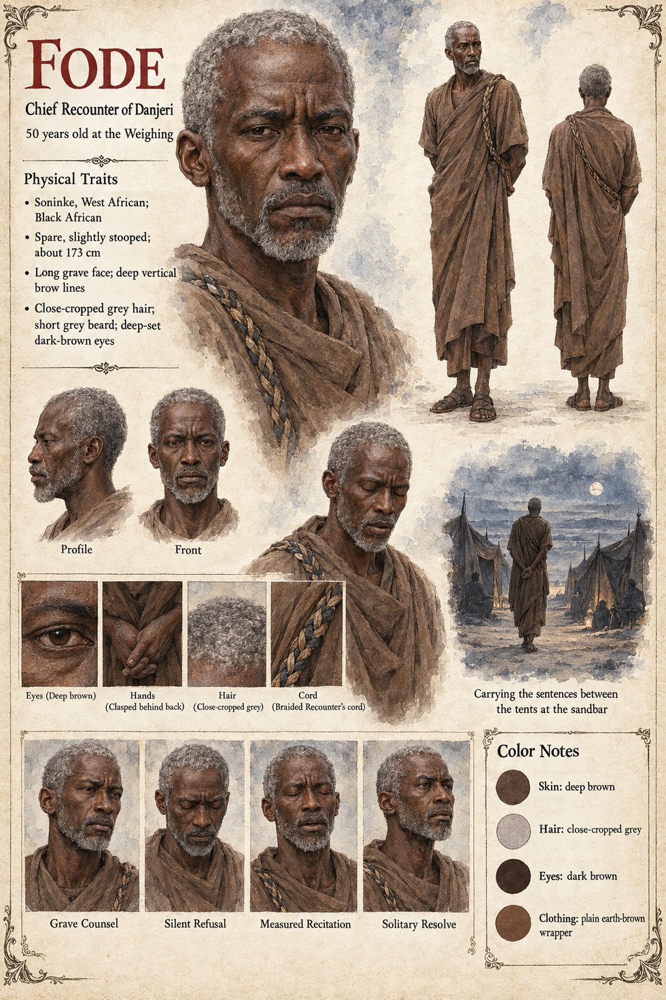

Fode
Second-ranked Recounter, then Chief Recounter of Danjeri · carrier of sentences · 43 in Chapter Seven, 50 at the Weighing
Second-ranked of the Recounters at forty-three, in a plain brown wrapper that does not entirely hide a braided cord, drinking well below his station at the Weighmaster's Table on the theory that a man who said nothing there might be mistaken for a clerk. When a drunk Bantaran caravan-master calls the palace dog the river's long debt, he is the one man in the room who does not laugh: in the grammar of the Kept Account a debt never collected is a dispute, and a dispute left standing across generations is the beginning of every catastrophe the faith was founded to prevent. He tries the phrase silently, as a man tries a tooth he suspects, and finds that it fits the thing far too well. Recounters write nothing down; he remembers all of it, which was worse. On the walk home he recites the line of kings backward, which Recounters do only when afraid.
Seven years on he is Chief Recounter, made so two winters earlier on the death of the ancient Nyeleni, and known to King Tiemoko since he was a stammering novice; the dying king sends for him and for the dog. Tell Damba, the king says, I kept the dog fed: he will set it into Damba's line within the week, and say it every day for the rest of his life without understanding that it is the only complete sentence about the dog the Account will ever hold. At the Weighing, when the dog sits on Sekou's left foot and Mansa cries that the long debt is paid, he has two words to say, the account stands or the account is disputed, and says nothing, which is afterward the one thing every party can agree on: the sign was never ratified. At the Second Asking, asked whether the Account would stand upon whatever the dog did, he has invented a third sentence, the one the case's cover title takes: The account stands, he says, as the court begins to roar, The dog is not in it. It is, for a Recounter, a perfect sentence, true in the only sense the faith's grammar allows and entirely incapable of being understood. Sekou's people hear the first half and Alassane's the second.
On the sandbar in the last week of Jorren he carries the two parties' sentences forty paces each way, ninety-one times by his own private count, each in the order and with the breath-marks it was spoken with; and when Alassane asks, Is it warm, where it sleeps?, he tells him that it slept on his brother's feet. On the fifth of Mavren he hears of the captains' vote to carry the dog before the army in a litter, recites the kings backward twice without reaching the bargain, and ten days later reaches it. He has rejected removal in order, asked Kolo sideways whether a man who loved an animal might not carry it beyond the northern wells, and been told I was told never; he pays Sira four hundred weights from the Kept Account's own reserve, its only unaudited expenditure in four hundred years, and chooses the Uncounted Day, on which a deed is entered nowhere. The night before, he sits in the kennel yard on the water-jar, and the dog lies down across his bare cold feet. The Archival Log presumes, on the strength of the Chief Recounter's later conduct and of nothing this desk would call evidence, that he was the principal.
He outlives the war by eleven years, teaching Mansa to recite a war that contains no dog: fourteen lines, no drug, no sign, no animal and no Uncounted Day. I am teaching you to be quiet about it, he tells her. On the last night of his life he asks her to enter one more deed into his own line, four hundred weights, weighed on the river-stone on the Uncounted Day, and she refuses.
The manuscript gives his ages, the braided cord, the brown wrapper, the stammering novice and the breath-marks of the sentences he carries. The sheet's apparent build, spare and slightly stooped at about 173 cm, long grave face with deep vertical brow lines, close-cropped grey hair, short grey beard and deep-set dark brown eyes are its own, as are its panels Grave Counsel, Silent Refusal, Measured Recitation and Solitary Resolve and its scene Carrying the sentences between the tents at the sandbar.
“The dog is not in it.”